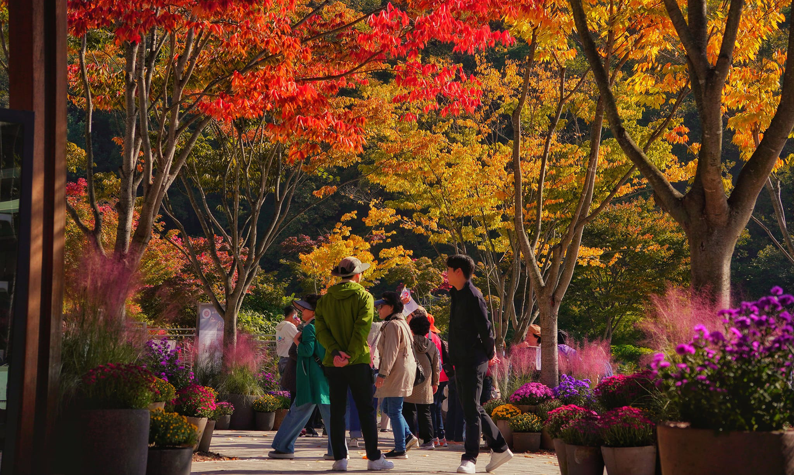

Những phụ nữ lặn biển ở đảo Jeju, Hàn Quốc, được ví như nàng tiên cá vùng vẫy dưới đại dương, đây cũng là nét văn hóa độc đáo ở hòn đảo này.
Phụ nữ lặn biển ở Jeju, còn gọi là haenyeo hay hải nữ. Truyền thống lặn biển của phụ nữ ở đảo này có từ 300 năm trước, vào triều đại Chosun. Cách đây một thế kỷ có khoảng trên 30.000 hải nữ trên đảo. Ngày nay, cộng đồng haenyeo gắn bó ở Jeju có khoảng 3.200 phụ nữ.
Mija Ko, 19 tuổi, đang làm tại Trung tâm trải nghiệm Beophwan Haenyeo. Mija có vóc dáng nhỏ nhắn, chia sẻ làm công việc hải nữ để phụ giúp gia đình. Hàng ngày vào 8h, Mija Ko băng qua những vách đá hẹp để ra vịnh và biển. Từ tháng 1 đến tháng 5, những hải nữ như Mija bắt tay vào công việc thu hoạch nhiều loại sinh vật biển có vỏ, bào ngư và hải sâm. Mija Ko chia sẻ ngày bội thu có thể thu thập một kg hải sản và bán với mức giá cố định là 150.000 won (khoảng 2,7 triệu đồng), trong đó 2.000 won (khoảng 36.000 đồng) được quyên góp để duy trì và phát triển cộng đồng haenyo. Hải nữ ở Jeju quan niệm biển khơi là tài sản chung nên mỗi người chỉ khai thác hải sản vừa đủ cho nhu cầu.
Một hải nữ chuyên nghiệp có thể lặn sâu tới 8m, nín thở trong một phút rưỡi. Những hải nữ cấp trung bình có thể lặn sâu tới 6m. Mija cho biết những du khách lần đầu trải nghiệm lặn biển có thể lặn được khoảng một mét.
Trước khi lặn, hải nữ Mija lấy hơi và nhảy xuống nước ở góc 90 độ một cách dứt khoát. 2-3 phút sau, cô ngoi lên mặt nước, đánh dấu sự trở lại của mình bằng tiếng huýt sáo đặc trưng (gọi là sumbisori). Tiếng huýt sáo từ lâu đã trở thành linh hồn của đất và nước ở Jeju,. Cô tiến lại gần những du khách đang quan sát, đưa cho họ nếm thử một loại ốc biển vừa bắt được. Những du khách nhận xét món sashimi này "có vị của biển, mọng nước".